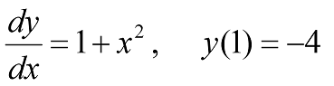

Tugas 6
METHODE EULER¶
Metode Euler adalah prosedur numerik orde pertama untuk menyelesaikan persamaan diferensial biasa dengan nilai awal yang diberikan. Ini adalah metode eksplisit paling dasar untuk integrasi numerikk persamaan diferensial biasa dan merupakan metode Runge-Kutta paing sederhana. Metode Euler dinamai Leonhard Euler, yang memperlakukannya dalam bukunya Institutionum Calculi Integralis yang diterbitkan pada tahun 1768-1870.
Metode Euler adalah metode tingkat pertama, yang berarti bahwa kesalahan lokal(per langkah) sebanding dengan kuadrat urutan langkah, dan kesalahan global (kesalahan pada waktu tertentu) sebanding dengan ukuran langkah. Metode Euler sering berfungsi sebagai dasar untuk membangun metode yang lebih kompleks, misalnya metode prediktor-korektor.
Misalnya diberikan Persamaan Diferensial Biasa orde satu,
y=dydx=f(x,y)y=dydx=f(x,y) dan nilai awal y(x0)=y0y(x0)=y0
Dengan langkah h didefinisikan sebagai
h=xn+1−xnh=xn+1−xn
Persamaan Euler untuk menyelesaikan persamaan diferensial biasa orde 1 dapat ditulis
yn+1=yn+hyn+1=yn+h x f(xn,yn)f(xn,yn)
SOAL¶
Gunakan metode Euler untuk menyelesaikan Persamaan Diferensial Biasa:

import numpy as np
#Parameter untuk Euler
y0 = -4
x0 = float(input("masukkan nilai x0 :"))
n = 4
h = 0.01
y = 0
hasil = y0
#Metode Euler
for i in range(1,n):
hasil = y0 + h*(1 + (x0) ** 2)
x0 += h
y0 = hasil
print("Langkah"+str(i)+": y"+str(i)+"= "+ str(hasil))
Hasil Running¶
masukkan nilai x0 :1
Langkah1: y1= -3.98
Langkah2: y2= -3.959799
Langkah3: y3= -3.9393949999999998
Process finished with exit code 0